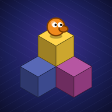
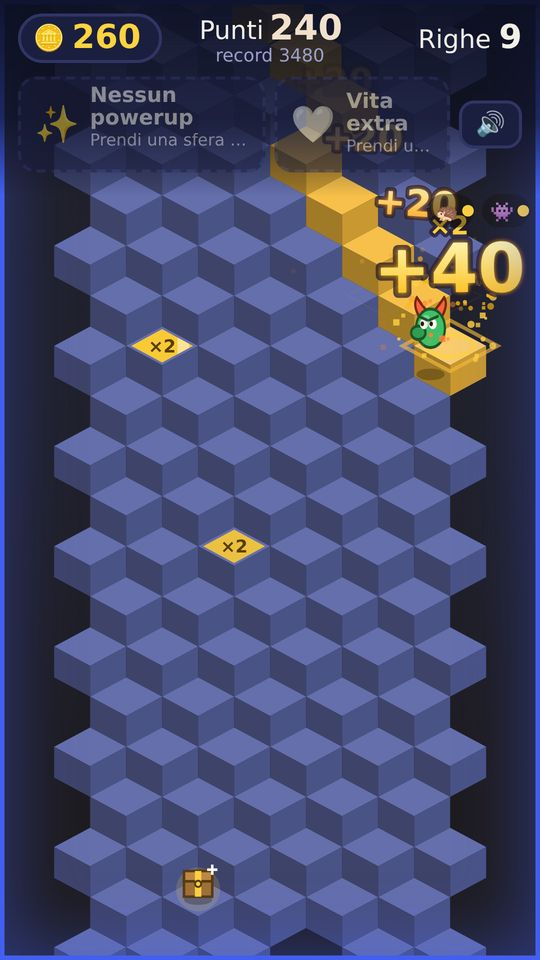
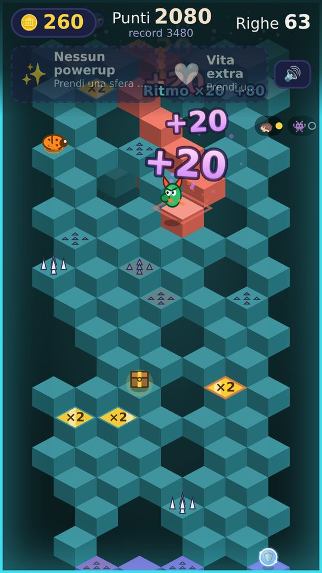
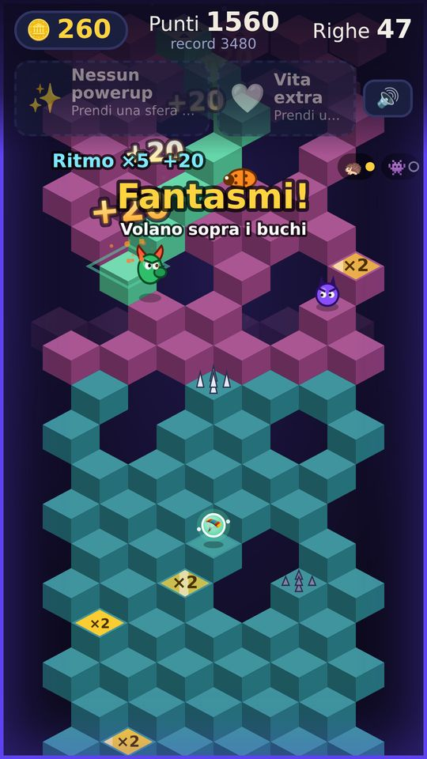
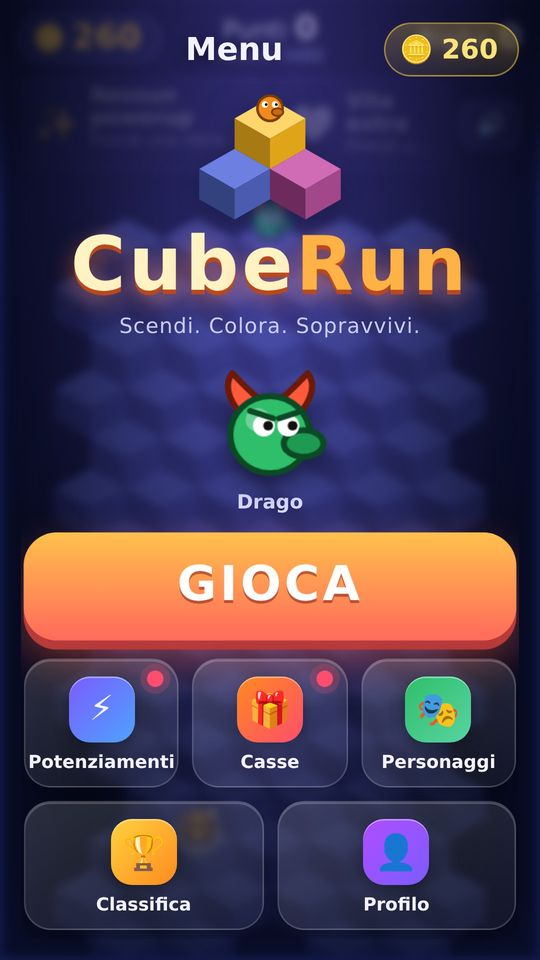
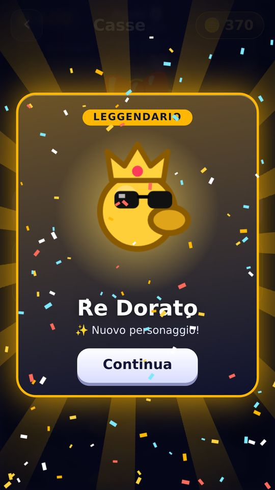
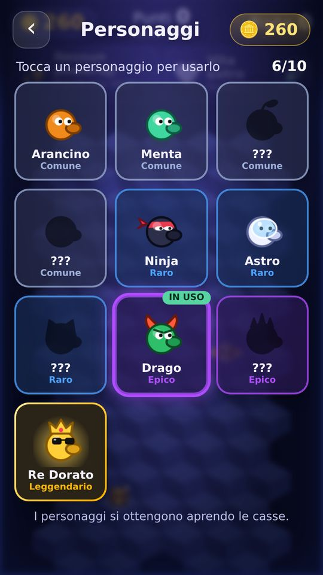
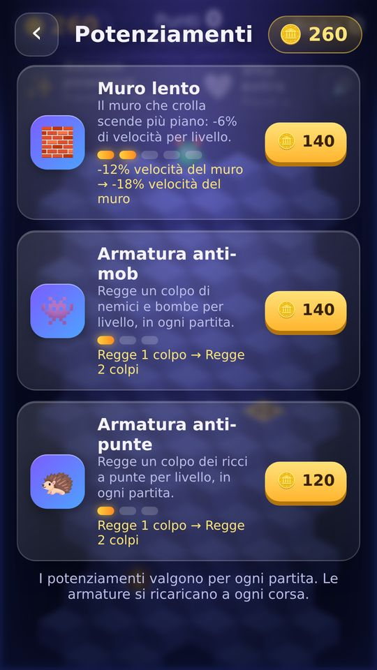

CubeRun
Scendi. Colora. Sopravvivi.
Salta sui cubi, colora la discesa e scappa dal terreno che crolla.
Presto su Google Play






Come si gioca
Tocca la metà sinistra o destra dello schermo per saltare in basso da quel lato. Colora i cubi, raccogli soldi e powerup, evita i nemici e non farti raggiungere dal terreno che crolla. Quanto riesci a scendere?
Cosa c'è dentro
Discesa infinita
Salta in diagonale, colora ogni cubo e scendi più che puoi mentre il terreno crolla alle tue spalle.
7 tipi di nemici
Inseguitori, scalatori, scarabei, fantasmi, massi, bombe e rane saltatrici: ognuno gioca a modo suo.
Powerup e forzieri
Anti-caduta, Invincibilità, Vita extra e piastrelle ×2. In ogni sezione c'è un forziere pieno di soldi.
Personaggi da collezionare
Apri le casse con le monete e completa la collezione, dal Comune al Leggendario.
Potenziamenti
Rallenta il crollo e ottieni armature che parano i colpi di nemici e punte.
Musica che accelera
Colonna sonora originale che va più veloce mentre scendi. Si gioca anche senza connessione.
Contatti
Domande o segnalazioni: tarek.assioui@gmail.com